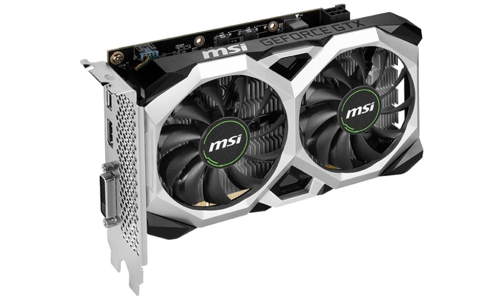

🧠 Soal Latihan: Hardware & Software
1. Mana yang termasuk hardware?
2. Fungsi utama dari CPU adalah?
3. Contoh software pengolah gambar adalah?
4. Alat untuk memindai dokumen fisik ke komputer adalah?
5. Windows termasuk dalam kategori?
6. RAM berfungsi untuk?
7. Aplikasi Spotify digunakan untuk?
8. Apa fungsi dari perangkat ini?
9. Perangkat yang menampilkan tampilan komputer disebut?
10. Contoh software pengolah animasi 3D adalah?
11. Perangkat keras untuk mencetak dokumen disebut?
12. Software yang digunakan untuk membuat dokumen teks?
13. Perangkat keras utama tempat semua komponen komputer terhubung adalah?
14. Aplikasi yang berfungsi untuk desain grafis?
15. Fungsi utama dari touchpad adalah?
16. AutoCAD digunakan untuk?
17. Merupakan gambar dari?

18. Gambar logo software ini biasa digunakan untuk?

19. Jika ingin membuat animasi seperti gambar dibawah, menggunakan software apa?

20. Apa nama perangkat ini, berfungsi untuk?

21. Apa nama perangkat ini, berfungsi untuk?

22. Dibawah ini mana gambar prosesor?
23. Apa nama perangkat ini, berfungsi untuk?

24. Dibawah ini mana yang bukan perangkat lunak?
25. Dibawah ini mana yang yang termasuk perangkat lunak?